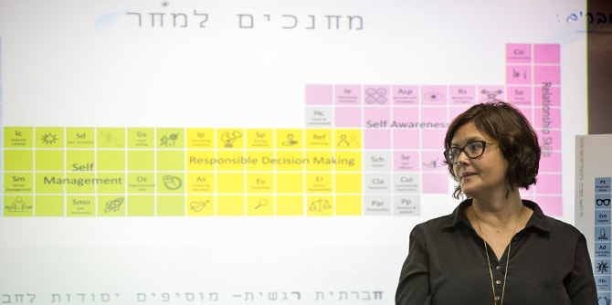
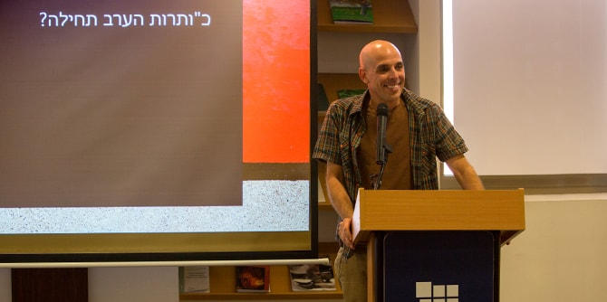

As part of their individual program of study, second-year fellows at the Mandel School for Educational Leadership each create a personal poster, with the goal of developing a practical intervention that will be implemented in Israeli education at the end of their studies.

“This exercise is an important part of the two-year journey here at the Mandel School for Educational Leadership," said
Danny Bar Giora, director of the Mandel School for Educational Leadership. "It is a journey of professional development that aims to enable you to identify a particular area of interest, define an arena for intervention, and choose the action by which you plan to have an impact on the field. It is an exercise in brevity: it encourages one to use as few words as possible, to move away from the verbosity that characterizes so much of our work here, and to make the transition to visual language. Developing the poster also requires a declaration of intentions and making a commitment,” he said.
Dr. Neta Sher-Hadar, the faculty member at the Mandel School for Educational Leadership who led the process of creating the posters, spoke about the textual dimension of the posters, which is intended to convey a concise professional message and present the fellows’ commitment to future action.
To view the posters, click here (Hebrew)

{kind=link}
{kind=link}